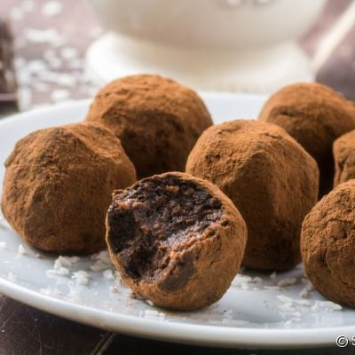
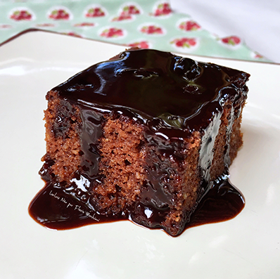

Doces
Brigadeiro Fit
2 bananas-nanicas bem maduras
2 colheres de sopa mais o suficiente para decorar de cacau em pó (100% cacau)
4 colheres de sopa de leite em pó
30 min Muito fácil
Nega Maluca Fit
2 colheres (de sopa) de cacau em pó
4 colheres (de sopa) de adoçante em pó
1 colher (de chá) de essência d e baunilha
1 colher (de chá) de manteiga
1/4 de xícara de água quente
1/2 xícara de farinha de aveia
1/2 xícara de farelo de aveia
1 colher (de sopa) de fermento em pó
30 min Intermediário